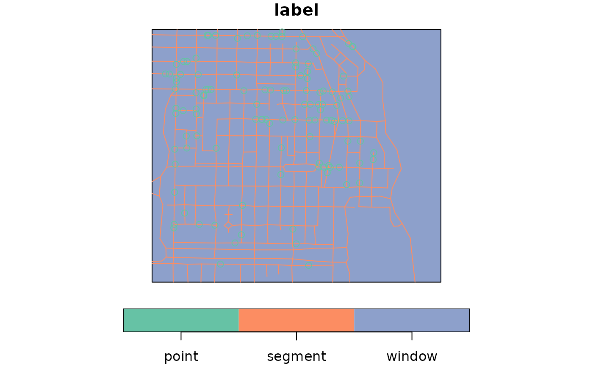
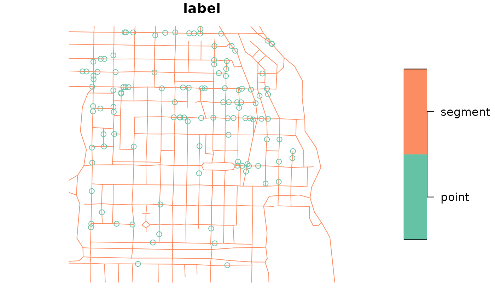

Convert foreign object to an sf object
st_as_sf(x, ...)
# S3 method for data.frame
st_as_sf(
x,
...,
agr = NA_agr_,
coords,
wkt,
dim = "XYZ",
remove = TRUE,
na.fail = TRUE,
sf_column_name = NULL
)
# S3 method for sf
st_as_sf(x, ...)
# S3 method for sfc
st_as_sf(x, ...)
# S3 method for Spatial
st_as_sf(x, ...)
# S3 method for map
st_as_sf(x, ..., fill = TRUE, group = TRUE)
# S3 method for ppp
st_as_sf(x, ...)
# S3 method for psp
st_as_sf(x, ...)
# S3 method for lpp
st_as_sf(x, ...)
# S3 method for s2_geography
st_as_sf(x, ..., crs = st_crs(4326))object to be converted into an object class sf
passed on to st_sf, might included named arguments crs or precision
character vector; see details section of st_sf
in case of point data: names or numbers of the numeric columns holding coordinates
name or number of the character column that holds WKT encoded geometries
passed on to st_point (only when argument coords is given)
logical; when coords or wkt is given, remove these columns from data.frame?
logical; if TRUE, raise an error if coordinates contain missing values
character; name of the active list-column with simple feature geometries; in case
there is more than one and sf_column_name is NULL, the first one is taken.
logical; the value for fill that was used in the call to map.
logical; if TRUE, group id labels from map by their prefix before :
coordinate reference system to be assigned; object of class crs
setting argument wkt annihilates the use of argument coords. If x contains a column called "geometry", coords will result in overwriting of this column by the sfc geometry list-column. Setting wkt will replace this column with the geometry list-column, unless remove is FALSE.
pt1 = st_point(c(0,1))
pt2 = st_point(c(1,1))
st_sfc(pt1, pt2)
#> Geometry set for 2 features
#> Geometry type: POINT
#> Dimension: XY
#> Bounding box: xmin: 0 ymin: 1 xmax: 1 ymax: 1
#> CRS: NA
#> POINT (0 1)
#> POINT (1 1)
d = data.frame(a = 1:2)
d$geom = st_sfc(pt1, pt2)
df = st_as_sf(d)
d$geom = c("POINT(0 0)", "POINT(0 1)")
df = st_as_sf(d, wkt = "geom")
d$geom2 = st_sfc(pt1, pt2)
st_as_sf(d) # should warn
#> Simple feature collection with 2 features and 2 fields
#> Geometry type: POINT
#> Dimension: XY
#> Bounding box: xmin: 0 ymin: 1 xmax: 1 ymax: 1
#> CRS: NA
#> a geom geom2
#> 1 1 POINT(0 0) POINT (0 1)
#> 2 2 POINT(0 1) POINT (1 1)
data(meuse, package = "sp")
meuse_sf = st_as_sf(meuse, coords = c("x", "y"), crs = 28992, agr = "constant")
meuse_sf[1:3,]
#> Simple feature collection with 3 features and 12 fields
#> Attribute-geometry relationship: 12 constant, 0 aggregate, 0 identity
#> Geometry type: POINT
#> Dimension: XY
#> Bounding box: xmin: 181025 ymin: 333537 xmax: 181165 ymax: 333611
#> Projected CRS: Amersfoort / RD New
#> cadmium copper lead zinc elev dist om ffreq soil lime landuse dist.m
#> 1 11.7 85 299 1022 7.909 0.00135803 13.6 1 1 1 Ah 50
#> 2 8.6 81 277 1141 6.983 0.01222430 14.0 1 1 1 Ah 30
#> 3 6.5 68 199 640 7.800 0.10302900 13.0 1 1 1 Ah 150
#> geometry
#> 1 POINT (181072 333611)
#> 2 POINT (181025 333558)
#> 3 POINT (181165 333537)
summary(meuse_sf)
#> cadmium copper lead zinc
#> Min. : 0.200 Min. : 14.00 Min. : 37.0 Min. : 113.0
#> 1st Qu.: 0.800 1st Qu.: 23.00 1st Qu.: 72.5 1st Qu.: 198.0
#> Median : 2.100 Median : 31.00 Median :123.0 Median : 326.0
#> Mean : 3.246 Mean : 40.32 Mean :153.4 Mean : 469.7
#> 3rd Qu.: 3.850 3rd Qu.: 49.50 3rd Qu.:207.0 3rd Qu.: 674.5
#> Max. :18.100 Max. :128.00 Max. :654.0 Max. :1839.0
#>
#> elev dist om ffreq soil lime
#> Min. : 5.180 Min. :0.00000 Min. : 1.000 1:84 1:97 0:111
#> 1st Qu.: 7.546 1st Qu.:0.07569 1st Qu.: 5.300 2:48 2:46 1: 44
#> Median : 8.180 Median :0.21184 Median : 6.900 3:23 3:12
#> Mean : 8.165 Mean :0.24002 Mean : 7.478
#> 3rd Qu.: 8.955 3rd Qu.:0.36407 3rd Qu.: 9.000
#> Max. :10.520 Max. :0.88039 Max. :17.000
#> NA's :2
#> landuse dist.m geometry
#> W :50 Min. : 10.0 POINT :155
#> Ah :39 1st Qu.: 80.0 epsg:28992 : 0
#> Am :22 Median : 270.0 +proj=ster...: 0
#> Fw :10 Mean : 290.3
#> Ab : 8 3rd Qu.: 450.0
#> (Other):25 Max. :1000.0
#> NA's : 1
library(sp)
x = rbind(c(-1,-1), c(1,-1), c(1,1), c(-1,1), c(-1,-1))
x1 = 0.1 * x + 0.1
x2 = 0.1 * x + 0.4
x3 = 0.1 * x + 0.7
y = x + 3
y1 = x1 + 3
y3 = x3 + 3
m = matrix(c(3, 0), 5, 2, byrow = TRUE)
z = x + m
z1 = x1 + m
z2 = x2 + m
z3 = x3 + m
p1 = Polygons(list( Polygon(x[5:1,]), Polygon(x2), Polygon(x3),
Polygon(y[5:1,]), Polygon(y1), Polygon(x1), Polygon(y3)), "ID1")
p2 = Polygons(list( Polygon(z[5:1,]), Polygon(z2), Polygon(z3), Polygon(z1)),
"ID2")
r = SpatialPolygons(list(p1,p2))
a = suppressWarnings(st_as_sf(r))
summary(a)
#> geometry
#> MULTIPOLYGON:2
#> epsg:NA :0
demo(meuse, ask = FALSE, echo = FALSE)
summary(st_as_sf(meuse))
#> Warning: GDAL Message 1: +init=epsg:XXXX syntax is deprecated. It might return a CRS with a non-EPSG compliant axis order.
#> cadmium copper lead zinc
#> Min. : 0.200 Min. : 14.00 Min. : 37.0 Min. : 113.0
#> 1st Qu.: 0.800 1st Qu.: 23.00 1st Qu.: 72.5 1st Qu.: 198.0
#> Median : 2.100 Median : 31.00 Median :123.0 Median : 326.0
#> Mean : 3.246 Mean : 40.32 Mean :153.4 Mean : 469.7
#> 3rd Qu.: 3.850 3rd Qu.: 49.50 3rd Qu.:207.0 3rd Qu.: 674.5
#> Max. :18.100 Max. :128.00 Max. :654.0 Max. :1839.0
#>
#> elev dist om ffreq soil lime
#> Min. : 5.180 Min. :0.00000 Min. : 1.000 1:84 1:97 0:111
#> 1st Qu.: 7.546 1st Qu.:0.07569 1st Qu.: 5.300 2:48 2:46 1: 44
#> Median : 8.180 Median :0.21184 Median : 6.900 3:23 3:12
#> Mean : 8.165 Mean :0.24002 Mean : 7.478
#> 3rd Qu.: 8.955 3rd Qu.:0.36407 3rd Qu.: 9.000
#> Max. :10.520 Max. :0.88039 Max. :17.000
#> NA's :2
#> landuse dist.m geometry
#> W :50 Min. : 10.0 POINT :155
#> Ah :39 1st Qu.: 80.0 epsg:NA : 0
#> Am :22 Median : 270.0 +proj=ster...: 0
#> Fw :10 Mean : 290.3
#> Ab : 8 3rd Qu.: 450.0
#> (Other):25 Max. :1000.0
#> NA's : 1
summary(st_as_sf(meuse.grid))
#> part.a part.b dist soil ffreq
#> Min. :0.0000 Min. :0.0000 Min. :0.0000 1:1665 1: 779
#> 1st Qu.:0.0000 1st Qu.:0.0000 1st Qu.:0.1193 2:1084 2:1335
#> Median :0.0000 Median :1.0000 Median :0.2715 3: 354 3: 989
#> Mean :0.3986 Mean :0.6014 Mean :0.2971
#> 3rd Qu.:1.0000 3rd Qu.:1.0000 3rd Qu.:0.4402
#> Max. :1.0000 Max. :1.0000 Max. :0.9926
#> geometry
#> POINT :3103
#> epsg:NA : 0
#> +proj=ster...: 0
#>
#>
#>
summary(st_as_sf(meuse.area))
#> geometry
#> POLYGON :1
#> epsg:NA :0
#> +proj=ster...:0
summary(st_as_sf(meuse.riv))
#> geometry
#> POLYGON :1
#> epsg:NA :0
#> +proj=ster...:0
summary(st_as_sf(as(meuse.riv, "SpatialLines")))
#> geometry
#> LINESTRING :1
#> epsg:NA :0
#> +proj=ster...:0
pol.grd = as(meuse.grid, "SpatialPolygonsDataFrame")
# summary(st_as_sf(pol.grd))
# summary(st_as_sf(as(pol.grd, "SpatialLinesDataFrame")))
if (require(spatstat.geom)) {
g = st_as_sf(gorillas)
# select only the points:
g[st_is(g, "POINT"),]
}
#> Loading required package: spatstat.geom
#> Loading required package: spatstat.data
#> spatstat.geom 2.4-0
#> Simple feature collection with 647 features and 4 fields
#> Geometry type: POINT
#> Dimension: XY
#> Bounding box: xmin: 580797.3 ymin: 675238.7 xmax: 584945.3 ymax: 678313.5
#> CRS: NA
#> First 10 features:
#> group season date label geom
#> 1 major dry 2006-01-06 point POINT (582518.4 676886.2)
#> 2 major dry 2006-01-10 point POINT (581823 677422.7)
#> 3 major dry 2006-01-15 point POINT (582131 676937.9)
#> 4 major dry 2006-01-24 point POINT (582111.9 677420)
#> 5 minor dry 2006-01-27 point POINT (582585.1 677509.7)
#> 6 major dry 2006-01-28 point POINT (582302.3 677521.6)
#> 7 major dry 2006-02-01 point POINT (583167.2 676730.5)
#> 8 major dry 2006-02-03 point POINT (583584.5 677207.1)
#> 9 major dry 2006-02-13 point POINT (583117.8 676850.3)
#> 10 major dry 2006-02-15 point POINT (582902.8 676724.1)
if (require(spatstat.linnet)) {
data(chicago)
plot(st_as_sf(chicago)["label"])
plot(st_as_sf(chicago)[-1,"label"])
}
#> Loading required package: spatstat.linnet
#> Loading required package: spatstat.random
#> spatstat.random 2.2-0
#> Loading required package: spatstat.core
#> Loading required package: nlme
#>
#> Attaching package: ‘nlme’
#> The following object is masked from ‘package:dplyr’:
#>
#> collapse
#> Loading required package: rpart
#> spatstat.core 2.4-2
#> spatstat.linnet 2.3-2

